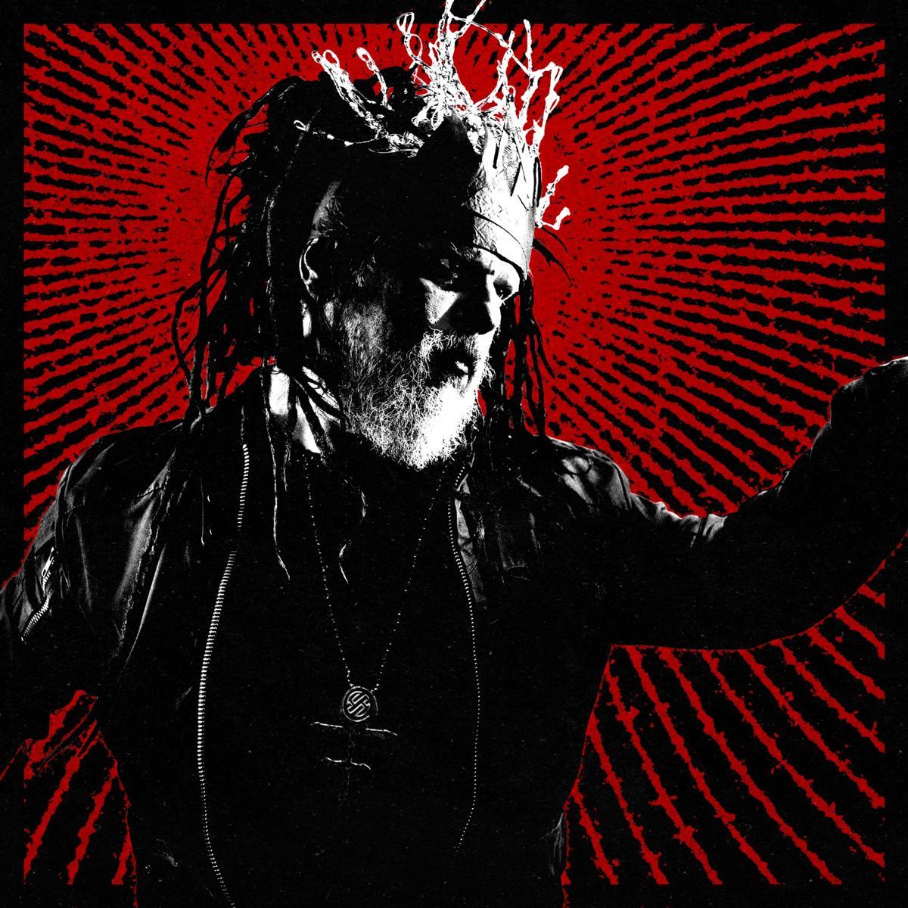

Darkwave guitar/electronic hybrid from Boston
Raziel Panic is the solo performance identity of Boston-based darkwave/electronic artist You Shriek. With a hybrid live rig of electric guitar and electronics, Raziel delivers emotionally charged performances that blend gothic textures, synth-driven rhythms, and brooding vocals. Rooted in the industrial and darkwave underground, his sound fuses analog grit with melodic hooks, appealing to fans of synthpop, post-punk, and experimental rock alike.
Stage Plot: Solo performance - vocals + electric guitar/electronic mix
Inputs:
- 1x vocal mic (XLR) – artist brings own if necessary
- 2x stereo line inputs (or 2x mono DI) for laptop/guitar mix
PA Requirements:
- Standard full-range vocal PA with monitors
- Stereo input to FOH mixer preferred
Sound Preferences:
- Light compression & reverb on vocals (if available)
- Clear monitor mix with vocal priority
Notes:
- Fully self-contained and adaptable to minimal setups
- No drums or amps; setup time: ~15 minutes
Email: contact@youshriek.com
Base: Boston, MA
Linktree: https://linktr.ee/youshriek